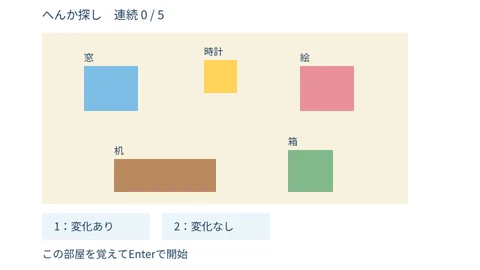

へんか探しの発展
基準の部屋を覚え、図形の変化があるかを見分けます。
始める前に
ZIPを展開してできたフォルダーでindex.htmlを開きます。基本編の完成版から始めます。ZIPには基本編の3ファイルが入っています。
WindowsでZIPを展開する（動画）
作業用フォルダーのscript.jsを編集します。各ステップで保存し、index.htmlを再読み込みしてください。
ステップ 1：2つの物を変える
このステップの見本を図で見る
count = 2、first = 0
窓から順に2個が変更対象
offset=0: 窓x += 30、offset=1: 時計visible=false
結果には窓の位置と時計の非表示の2つが出る
ゲーム画面とコードの前後を見る

このステップの見本
const count = 1;
変わったコードの一例（script.js）const count = 2;
見本で確かめること
変化ありのとき、2つの物の違いが結果に表示されます。
目標
変化ありの回で別々の2つの物を変えます。
確認欄までは準備中です。作業を順に進め、確認欄で保存して動作を確かめます。
書く場所と置き換えるコード
変える物を2つにする
作業用フォルダーの script.js で、次の範囲を探して置き換えます。
置き換える範囲
const count = 1;
置き換えるコード
const count = 2;
count を2にすると、選んだ位置から2つの物に変化を加えます。
保存後の確かめ方
保存してゲーム画面を更新する（動画）
index.html を再読み込みします。変化ありのとき、2つの物の違いが結果に表示されます。 この段階の見本を開く
小さな練習
5個中の最後の番号4の次は、剰余を使うと何番ですか。
練習の答え
0番です。
ステップ 2：制限時間をつける
このステップの見本を図で見る
deadline = 開始時刻 + 8000
8秒の制限時間
Math.ceil((8000 - 7200) / 1000) = 1
800ms残っていても表示は1秒
今 >= deadline → finish(false)
時間切れになり連続正解は0へ
ゲーム画面とコードの前後を見る
このステップの見本
この行を足す前 変わったコードの一例（script.js）
if (state === "playing") ctx.fillText("残り " + Math.max(0, Math.ceil((deadline - performance.now()) / 1000)) + "秒", 535, 32);
見本で確かめること
基準画面から開始して8秒待つと時間切れになります。
目標
8秒以内に変化を選びます。
確認欄までは準備中です。作業を順に進め、確認欄で保存して動作を確かめます。
書く場所と置き換えるコード
締切を覚える
作業用フォルダーの script.js で、次の範囲を探して置き換えます。
置き換える範囲
let scene, differences, state, streak, message;
置き換えるコード
let scene, differences, state, streak, message, deadline;
deadline は回答を受け付ける締切です。
各回の締切を設定する
作業用フォルダーの script.js で、次の範囲を探して置き換えます。
置き換える範囲
state = "playing"; message = "";
置き換えるコード
state = "playing"; message = ""; deadline = performance.now() + 8000;
performance.now() はミリ秒の時刻です。8000を足すと8秒後です。
時間切れを判定する
作業用フォルダーの script.js で、次の目印を探し、その直後に書きます。
目印
function update() {
書き足すコード
if (state === "playing" && performance.now() >= deadline) { finish(false); message = "時間切れ。" + message; }
回答中に現在時刻が締切以上なら不正解として終了し、時間切れの文章を加えます。
残り時間を表示する
作業用フォルダーの script.js で、次の目印を探し、その直後に書きます。
目印
if (state === "clear") ctx.fillText("クリア！ Spaceで再挑戦", 470, 384);
書き足すコード
if (state === "playing") ctx.fillText("残り " + Math.max(0, Math.ceil((deadline - performance.now()) / 1000)) + "秒", 535, 32);
締切との差を1000で割り、Math.ceil() で切り上げます。Math.max() で0より小さくしません。
基準を見た後に締切を設定する
作業用フォルダーの script.js で、次の範囲を探して置き換えます。
置き換える範囲
if (state === "reference" && event.key === "Enter") { state = "playing"; message = ""; }
置き換えるコード
if (state === "reference" && event.key === "Enter") { state = "playing"; message = ""; deadline = performance.now() + 8000; }
基準画面から Enter で始めるときも、その時点から8秒後を締切にします。
保存後の確かめ方
基準画面から開始して8秒待つと時間切れになります。 この段階の見本を開く
小さな練習
開始から8000ミリ秒は何秒ですか。
練習の答え
8秒です。
ステップ 3：変わった物を選ぶ
このステップの見本を図で見る
correct && changed → state = "locate"
まだ正解回数は増やさない
differences.some(item => item.id === "窓") = true
変わった2つのうち1つを選べば正解
differences.some(item => item.id === "机") = false
変わっていない物なので連続0に戻る
ゲーム画面とコードの前後を見る
このステップの見本
この行を足す前 変わったコードの一例（script.js）
if (correct && changed) { state = "locate"; message = "変わった物をクリック"; return; }
見本で確かめること
変化ありを選んだ後、変わった物をクリックすると結果が出ます。
目標
変化ありと答えたら、変わった物もクリックします。
確認欄までは準備中です。作業を順に進め、確認欄で保存して動作を確かめます。
書く場所と置き換えるコード
変化した物を探す段階へ進む
作業用フォルダーの script.js で、次の目印を探し、その直後に書きます。
目印
const correct = changed === (differences.length > 0);
書き足すコード
if (correct && changed) { state = "locate"; message = "変わった物をクリック"; return; }
変化ありを正しく選んだら "locate" に変え、変わった物をクリックする案内を出します。
クリックした物を調べる
作業用フォルダーの script.js で、次の目印を探し、その直後に書きます。
目印
const y = (event.clientY - rect.top) * canvas.height / rect.height;
書き足すコード
if (state === "locate") {
const hit = baseline.find(item => {
const shown = scene.find(other => other.id === item.id);
const inside = target => x >= target.x && x <= target.x + target.w && y >= target.y && y <= target.y + target.h;
return inside(item) || (shown.visible && inside(shown));
});
if (hit) finish(differences.some(item => item.id === hit.id));
return;
}
基準の四角と、表示されている場合の変更後の四角のどちらかにクリック位置が入る物を探します。その id が differences に含まれれば正解です。
保存後の確かめ方
変化ありを選んだ後、変わった物をクリックすると結果が出ます。 この段階の見本を開く
小さな練習
消えた物はどこをクリックしますか。
練習の答え
基準画面でその物があった場所です。